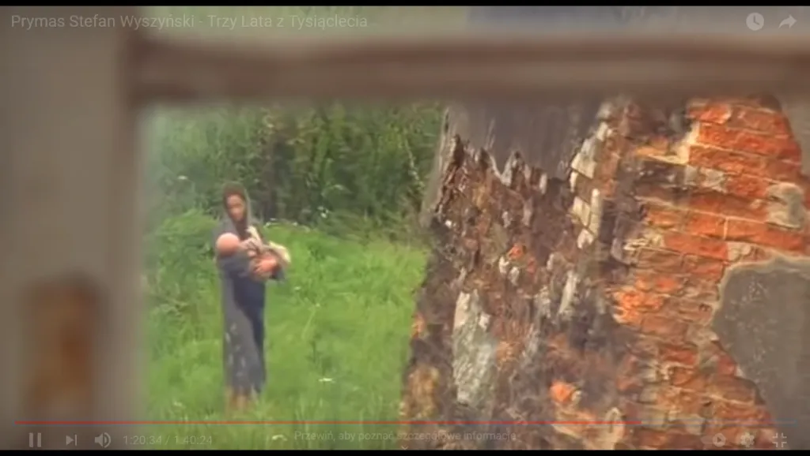

“Trzy lata z tysiąclecia”, to nie dużo a okazały się kluczowe dla naszego pokolenia.
Dzięki nim i Prymasowi Wyszyńskiemu nasz kraj nie jest podobny to post-sowieckich republik z pomnikami Lenina na rynku każdego powiatu.
Wczoraj w Poznaniu był wspaniały marsz, jest nas bardzo wielu. Zjednoczeni jesteśmy siłą! 15-tego, w środę widzimy się pod sejmem. Dziś mamy dzień, w którym musimy się zastanowić chwilę, skąd i dokąd idziemy, zatrzymać się, odpocząć.

"Trzy lata z tysiąclecia", to nie dużo a okazały się kluczowe dla naszego pokolenia. Dzięki nim i Prymasowi Wyszyńskiemu nasz kraj nie jest podobny to post-sowieckich republik z pomnikami Lenina na rynku każdego powiatu. Dajmy z siebie 1 h i 40 min. To kropla z tysiąclecia, ale warto, aby ta kropla czasu nabrała smaku naszej kultury, historii, sacrum. Polecam dziś ten bardzo dobry i ważny film.Wczoraj w Poznaniu był wspaniały marsz, jest nas bardzo wielu. Zjednoczeni jesteśmy siłą! 15-tego, w środę widzimy się pod sejmem. Dziś mamy dzień, w którym musimy się zastanowić chwilę, skąd i dokąd idziemy, zatrzymać się, odpocząć. "Trzy lata z tysiąclecia", to nie dużo a okazały się kluczowe dla naszego pokolenia. Dzięki nim i Prymasowi Wyszyńskiemu nasz kraj nie jest podobny to post-sowieckich republik z pomnikami Lenina na rynku każdego powiatu. Dajmy z siebie 1 h i 40 min. To kropla z tysiąclecia, ale warto, aby ta kropla czasu nabrała smaku naszej kultury, historii, sacrum. Polecam dziś ten bardzo dobry i ważny film.
Cda: https://www.cda.pl/video/83002238b
YT: https://www.youtube.com/watch?v=h8f5U8vWIV4
Dwa słowa z Poznania : https://www.youtube.com/watch?v=TcT_KwE046Q&t=7001s
Trzy słowa z Poznania : https://www.youtube.com/watch?v=TcT_KwE046Q&t=13547s
Paweł Klimczewski